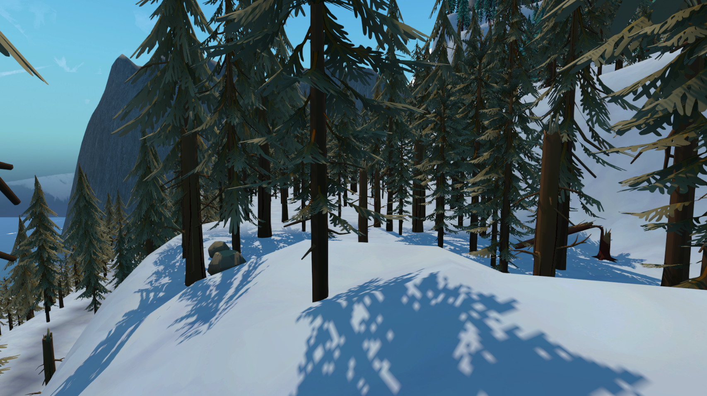

Jutta Mujunen
Game Developer
Project Overview
Harmony in the Wild is an open-world adventure game where you play as a young fox who aims to restore the harmony to their home. The game contains dungeons and various side quests which allow the player to gain more abilities to help on their journey.
The game was made by six game development students during 3,5 months as a part of their studies. I was mainly involved in programming and world building.
Programming
I helped in building some of the main mechanics in the game, such as quest and dialogue systems. I was also highly involved in making two dungeons and two side quests which allow you to gain abilities like freeze and rock smashing.
Gained skills in...
Event Driven Programming
Singletons
Scriptable Objects
Narrative Scripting with Ink
Inheritance
Dialogue Manager
Script in charge of handling interactions between narrative tool Ink and Unity.
Ghostly Slumbers Manager & Quest Step
The game contains a quest that requires the player to talk to a certain amount of ghosts. Ghostly Slumbers Manager keeps track of the progress in the quest, acting as a quest step.
Quest Point
Quest point are related to quest progress tracking: by interacting with them, the player can either start or finish quests based on the current state of the quest. The quest points can also trigger some dialogue.
World Building
Before this, I had never been involved in world building or environmental design, meaning I was able to learn a lot. I was consulting other team members related to the environment, but I was solely responsible for the concrete work shown in the game.
The game contains two different biomes – the forest and the arctic. Both of these have distinct features and various point of interests. The biomes might also have sub-sections, such as beaches and mountains.
Gained skills in...
Unity's Terrain Toolbox
Creative processes required in world building


